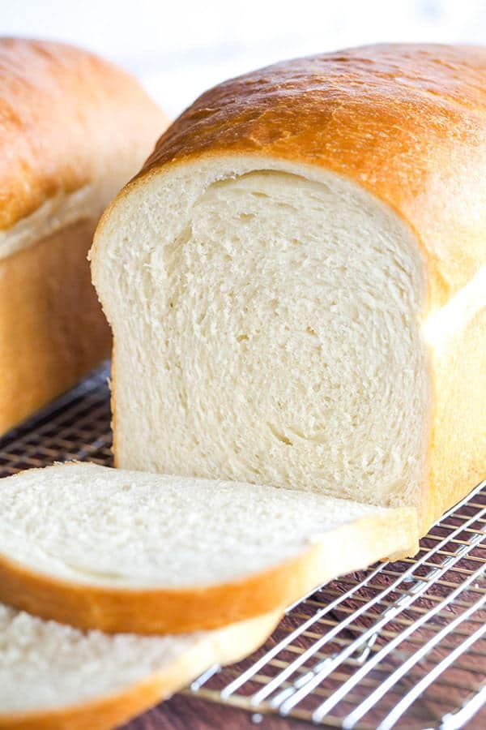

Home Page
White Bread

White Bread Recipe
This is a recipe that will enable you to easily bake some bread.
Ingredients
- 500g Strong white flour, plus extra for dusting
- 2 tsp Salt
- 7g Fast action yeast
- 3tbsp Olive Oil
- 300ml Water
Steps
- Mix 500g strong white flour, 2 tsp salt and a 7g sachet of fast-action yeast in a large bowl.
- Make a well in the centre, then add 3 tbsp olive oil and 300ml water, and mix well.
If the dough seems a little stiff, add another 1-2 tbsp water and mix well.
- Tip onto a lightly floured work surface and knead for around 10 mins.
- Once the dough is satin-smooth, place it in a lightly oiled bowl and cover with cling film.
Leave to rise for 1 hour until doubled in size or place in the fridge overnight.
- Line a baking tray with baking parchment.
Knock back the dough (punch the air out and pull the dough in on itself) then gently mould the dough into a ball.
- Place it on the baking parchment to prove for a further hour until doubled in size.
- Heat oven to 220C/fan 200C/gas 7.
- Dust the loaf with some extra flour and cut a cross about 6cm long into the top of the loaf with a sharp knife.
- Bake for 25-30 mins until golden brown and the loaf sounds hollow when tapped underneath. Cool on a wire rack.